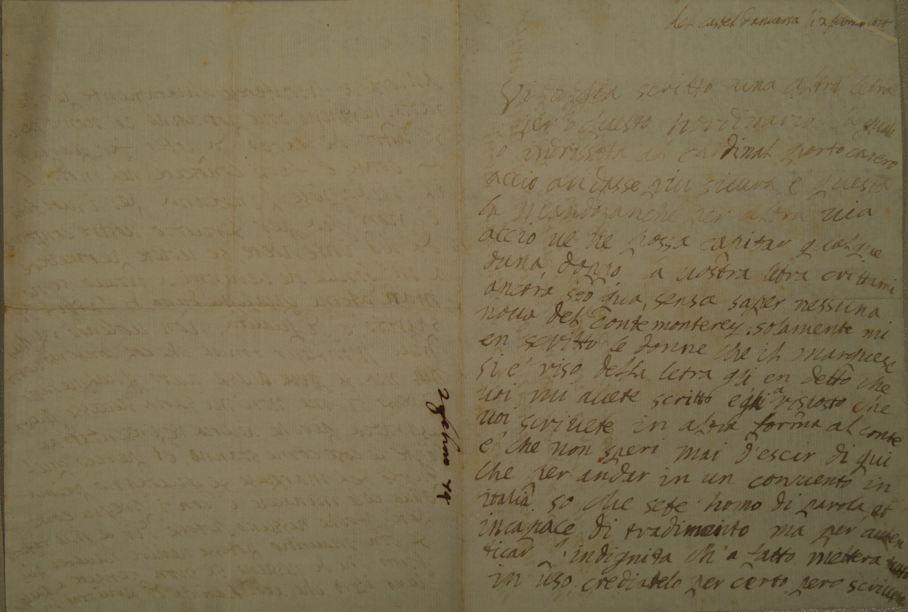
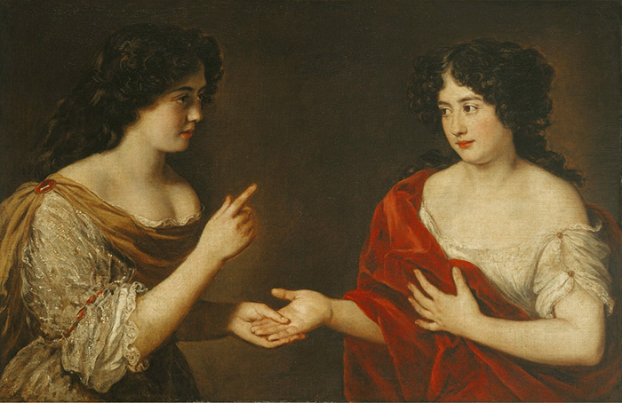

The Letters of
Marie Mancini
A 17th-Century Affair:
Marie Mancini (1639-1715) was famous as the first love of Louis XIV of France, and later she and her sister Hortense became scandalous celebrities by running away from their husbands and traveling unaccompanied through much of Western Europe. Marie’s unpublished letters to Lorenzo Colonna (her estranged husband) and others reside in the Colonna Archive at the Library of the Abbey of Santa Scolastica, in Subiaco, Italy. This project will publish them online.

The Mancini Project
Begun in Spring 2020, this project seeks to publish Marie Mancini's approximately 900 letters that are held in the Colonna Archive at the Library of the Abbey of Santa Scolastica, in Subiaco, Italy. Approximately 100 letters have been transcribed so far, six of which have been translated into English.
Ultimately, the goal of this project is not only to provide a space for Marie Mancini's voice to be freely accessed, but also to provide avenues for historical exploration. To this end, users may:
Explore and read the letters;
Browse Marie's correspondence in chronological order;
View her travels across Europe;
Download the letters' text for further research.
...with more options to come!